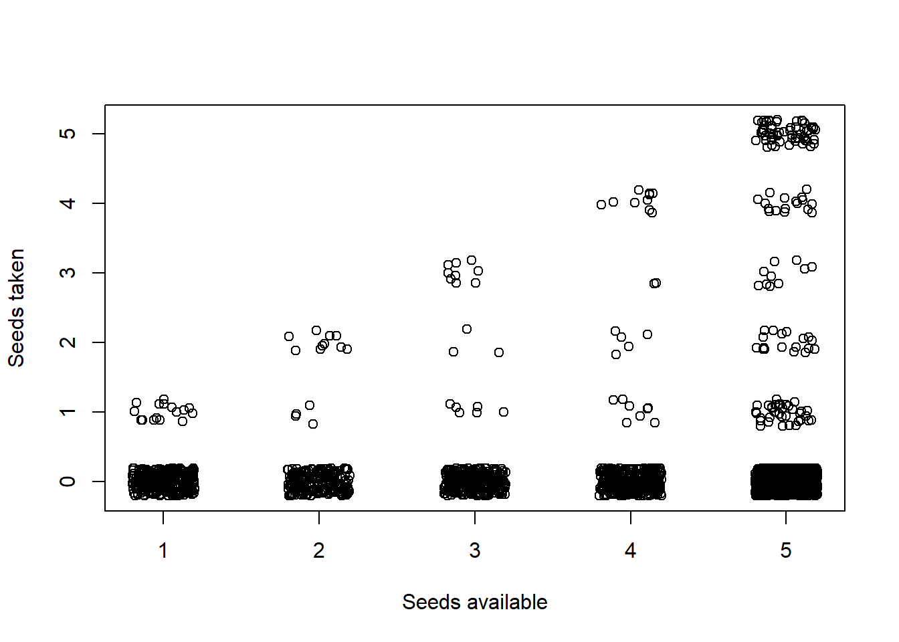
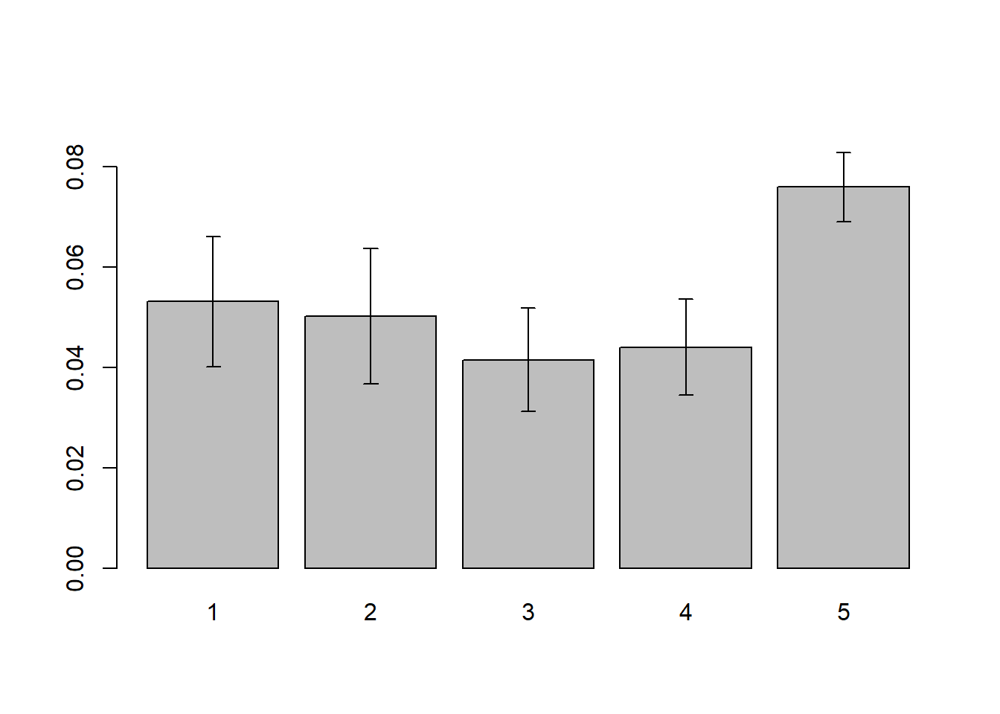
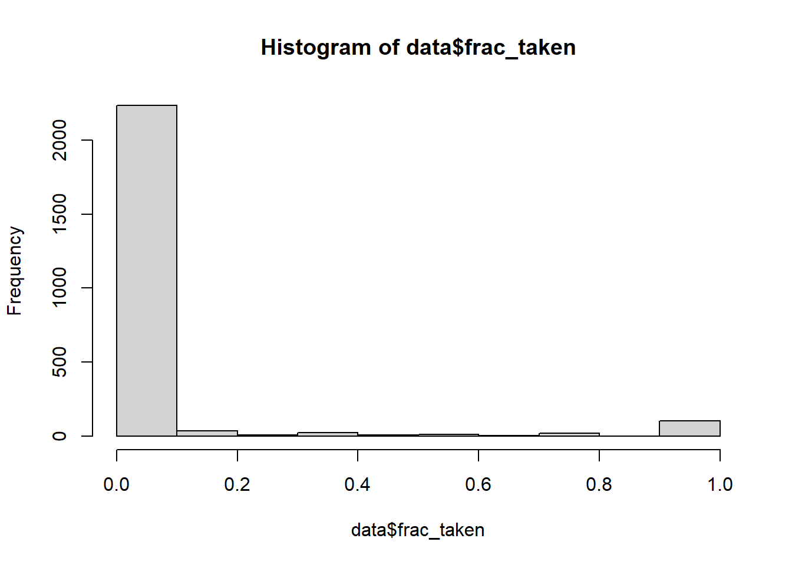
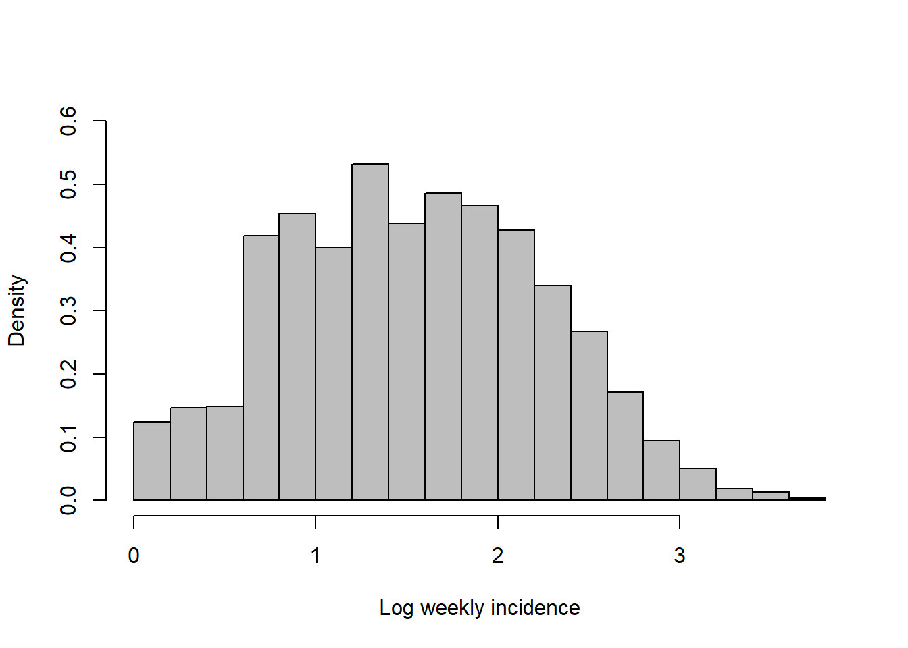
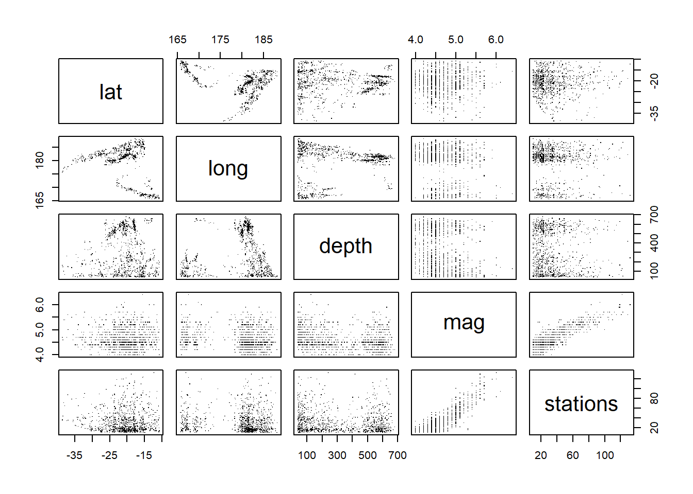
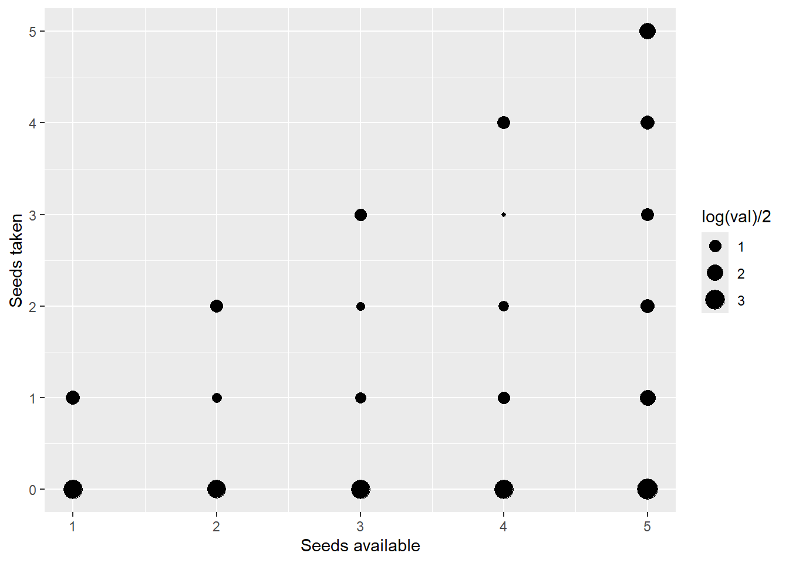
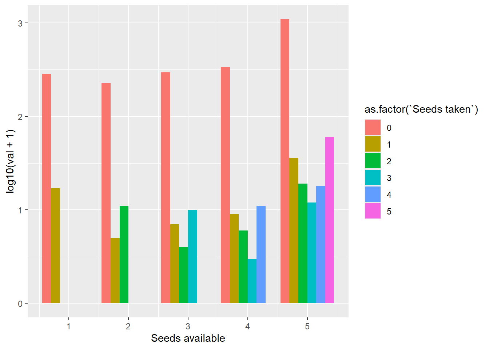
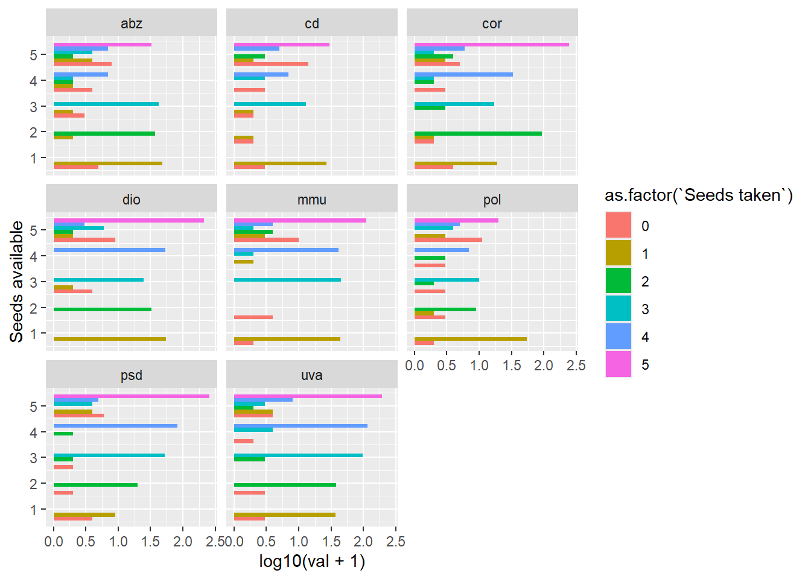
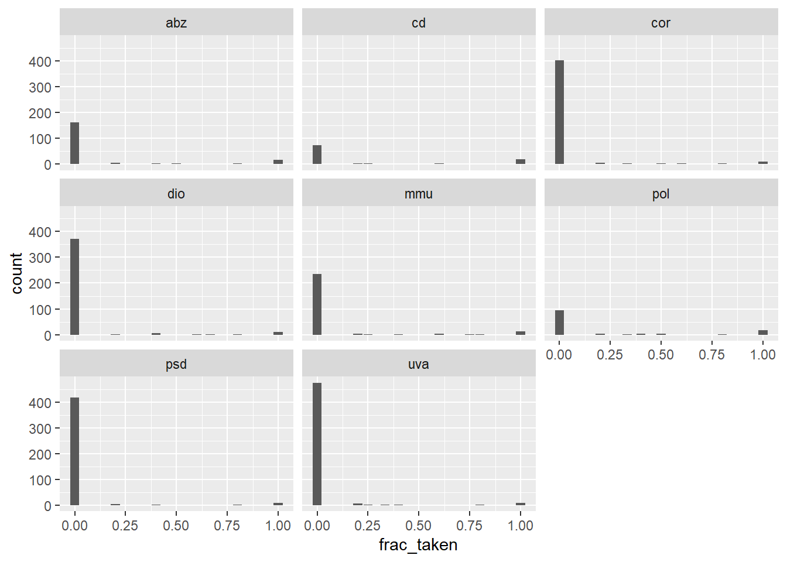
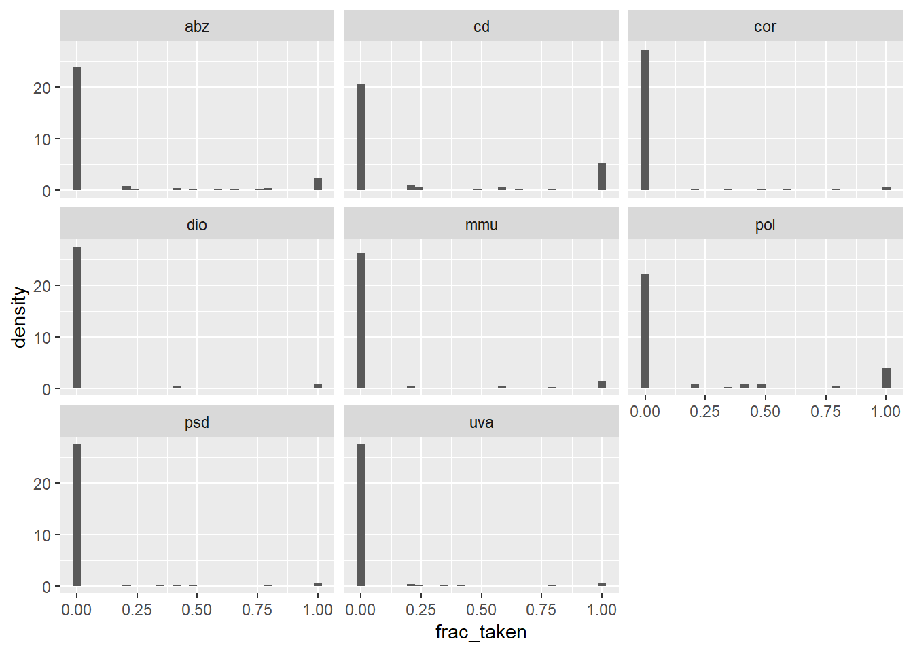

Exploratory data analysis and graphics (lab 2)
library(emdbook)1 Learning outcomes
This lab will teach you how 1) to read in data and reshape it so it matches your needs, and 2) to make different types of graphs that you need for data exploration and presentation purposes. It does so by reproducing the figures shown in Chapter 2 and more. The exercises, which will be more difficult than those in Lab 1, will typically involve variations on the figures shown in the text. You will work through reading in the different data sets and constructing the figures shown, or variants of them. It would be even better to work through reading in and making exploratory plots of your own data.
2 Clear workspace and read in and reshape data
First I’m going to clear the workspace with rm(list=ls()). ls() lists all the objects in the workspace with ls() and then uses rm() to remove them. It is recommend to have this code at the top of every script, so every time you start working on the script you are sure the memory is cleared. You can also clear workspace from the menu in Rstudio (the little brush in the topright panel) and read in the measles data, which are space separated and have a header:
rm(list = ls())2.1 Reading data
Find the file called seedpred.dat. It is in the right format (plain text, long format), so you can just read it in with
data = read.table("seedpred.dat", header = TRUE)Add the variable available to the data frame by combining taken and remaining (using the $ symbol):
data$available = data$taken + data$remainingPitfall #1: finding your file If R responds to your read.table() or read.csv() command with an error like
Error in file(file, "r") : unable to open connection In addition: Warning message: cannot open file 'myfile.csv'
it means it can’t find your file, probably because it isn’t looking in the right place. By default, R’s working directory is the directory in which the R program starts up, which is by default something like C:/Program Files/R/rw2010/bin. (R uses / as the [operating-system-independent] separator between directories in a file path.) If you are using Rstudio, go to ‘Session’ and click ‘Set working directory’. You can also use the setwd() command to set the working directory. getwd() tells you what the current working directory is. While you could just throw everything on your desktop, it’s good to get in the habit of setting up a separate working directory for different projects, so that your data files, metadata files, R script files, and so forth, are all in the same place. Depending on how you have gotten your data files onto your system (e.g. by downloading them from the web), Windows will sometimes hide or otherwise screw up the extension of your file (e.g. adding .txt to a file called mydata.dat). R needs to know the full name of the file, including the extension.
For example to set a working directory:
setwd("D:/Bolker/labs/")Pitfall #2: checking number of fields In some cases the number of fields is not the same for every line in your data file. In that case you may get an error like:
Error in read.table(file = file, header = header, sep = sep, quote = quote, : more columns than column names
or
Error in scan(file = file, what = what, sep = sep, quote = quote, dec = dec, : line 1 did not have 5 elements
If you need to check on the number of fields that R thinks you have on each line, use
count.fields("myfile.dat",sep=",")(you can omit the sep="," argument if you have whitespace- rather than comma delimited data). If you are checking a long data file you can try
cf = count.fields("myfile.dat",sep=",")
which(cf!=cf[1])to get the line numbers with numbers of fields different from the first line. By default R will try to fill in what it sees as missing fields with NA (“not available”) values; this can be useful but can also hide errors. You can try
mydata <- read.csv("myfile.dat", fill = FALSE)to turn off this behavior; if you don’t have any missing fields at the end of lines in your data this should work.
If your file is a comma separated file, you can also use read.csv. This function has set some arguments to default, e.g. the seperator is a comma in this case (sep=",")
Pitfall #3: List separator It may happen when you save a file in excel as .csv that the decimals are not indicated by a dot . but by a comma , and that the list separator is a semi-colon. To avoid this happen change the regional settings in your computer (control panel) to American or English, or change the list separator and the decimal symbol manually.
2.2 Checking data
R will automatically recognize the type of data of the columns that are read in, but sometimes it goes wrong. To check that all your variables have been classified correctly:
sapply(data, class) species tcum tint remaining taken available
"character" "integer" "integer" "integer" "integer" "integer" This applies the class() command, which identifies the type of a variable, to each column in your data. Alternatively,
summary(data)can be very helplful to get a glance of the characteristics of the data.
Non-numeric missing-variable strings (such as a star, *) will also make R misclassify. Use na.strings in your read.table() command:
mydata <- read.table("mydata.dat", na.strings = "*")You can specify more than one value with (e.g.) na.strings=c(“”,”**”,“bad”,“-9999”).
head(), summary() and str() on data; make sure you understand the results.
head() gives the first five rows of your data and are used to inspect whether the read-in procedure went ok. For example, you can see whether the header is really a header or whether is was read-in as the first data row.
summary() gives you a summary view of your data.frame, reporting the mean and quantiles of your data, and numbers of NAs.
str() shows you the structure and data types that are in the data.frame or other R objects. str() can be convenient to check if the data types are as you want to have them, or to extract information from complex R objects such as a model object fitted with lm.
2.3 Reshaping data
Reshaping a dataframe is an important part of data exploration. For example, for making field recordings it is convenient to have the measurements of different plots or transects in different columns on your sheet. This is called a wide format. However, for data analysis in R (and other statistical programs) you need to have all measurements in one column, with an additional column indicating which plot a measurement belongs to (so called long format).
Below we create a dataframe in long format and reshape it. Here are the commands to generate the data frame I used as an example in the text (I use LETTERS, a built-in vector of the capitalized letters of the alphabet, and runif(), which picks a specified number of random numbers from a uniform distribution between 0 and 1. The command round(x,3) rounds x to 3 digits after the decimal place.):
loc = factor(rep(LETTERS[1:3],2))
day = factor(rep(1:2,each=3))
val = round(runif(6),3)
d = data.frame(loc,day,val)This data set is stored in long format. To go to wide format, we first need to (install and) load the library reshape2. In Lab 1 you learned how to install packages. You can load a package by library() or require(). Thus to use an additional package it must be (i) installed on your machine (with install.packages()) or through the menu system and (ii) loaded in your current R session (with library()):
library(reshape2)
d2 = dcast(d,loc~day )Using val as value column: use value.var to override.d2 loc 1 2
1 A 0.696 0.224
2 B 0.602 0.015
3 C 0.670 0.298loc~day specifies that loc will be used as rows and day will be put into columns.
To go back to long format, we simply write:
melt(d2, variable.name="day")By specifying the variable.name to day, we put the columns (1 and 2) into a new column called day. The column in which the values are stored can be set by using the argument value.name
melt(d2, variable.name="day",value.name="val")Using loc as id variables loc day val
1 A 1 0.696
2 B 1 0.602
3 C 1 0.670
4 A 2 0.224
5 B 2 0.015
6 C 2 0.298d, but with an extra column month consisting of two levels. The value of month should be 1 for the first records and 2 for the second. Next, reshape to wide format and back to long format. The long format is what we commonly use in statistics.
loc = factor(rep(LETTERS[1:3],4))
month = factor(rep(1:2,each=6))
day = factor(rep(1:2,each=3))
val = round(runif(12),3)
d1 = data.frame(loc,month,day,val)
d3 = dcast(d1,loc~month+day)
melt(d3,variable.name="month_day")
2.4 Advanced data types (Time permitting)
While you can usually get away by coding data in not quite the right way - for example, coding dates as numeric values or categorical variables as strings - R tries to “do the right thing” with your data, and it is more likely to do the right thing the more it knows about how your data are structured.
Factors instead of strings
Sometimes R’s default of assigning characters is not what you want: if your strings are unique identifiers and you want to make it a factor, the default read.table will convert this into characters. If all of your non-numeric variables should be treated as factor strings rather than characters, you can just specify as.is=FALSE.
Factors instead of numeric values
Sometimes you have numeric labels for data that are really categorical values - for example if your sites or species have integer codes (often data sets will have redundant information in them, e.g. both a species name and a species code number). It’s best to specify appropriate data types, so use colClasses to force R to treat the data as a factor. For example, if we wanted to make tcum a factor instead of a numeric variable:
data2 = read.table("seedpred.dat", header = TRUE, colClasses = c(rep("factor",
2), rep("numeric", 3)))
sapply(data2, class)n.b.: by default, R sets the order of the factor levels alphabetically. You can find out the levels and their order in a factor f with levels(f). If you want your levels ordered in some other way (e.g. site names in order along some transect), you need to specify this explicitly. Most confusingly, R will sort strings in alphabetic order too, even if they represent numbers.
This is OK:
f = factor(1:10)
levels(f) [1] "1" "2" "3" "4" "5" "6" "7" "8" "9" "10"However, if we create a factor f through:
f = factor(as.character(1:10))
levels(f) [1] "1" "10" "2" "3" "4" "5" "6" "7" "8" "9" it will put the 10-th level as second. You can fix the levels by using the levels argument in factor() to tell R explicitly what you want it to do, e.g.:
f = factor(as.character(1:10), levels = c(1:10))So the levels=1:10 argument explicitly states that there are ten levels and that the order of these levels is 1,2,3,4,5,6,7,8,9,10. The levels argument needs a vector of unique numeric values or character strings (c(1:10)).
Additionally, if you create a factor with levels ‘north’, ‘middle’ and ‘south’ they will be sorted by alphabet
x = c("north", "middle", "south")
factor(x)[1] north middle south
Levels: middle north southIf you want to sort them geographically instead of alphabetically you again can use the levels argument. Additionally, you can add levels that were not included in the vector itself:
f = factor(x, levels = c("far_north", "north", "middle", "south"))Likewise, if your data contain a subset of integer values in a range, but you want to make sure the levels of the factor you construct include all of the values in the range, not just the ones in your data. Use levels again:
f = factor(c(3, 3, 5, 6, 7, 8, 10), levels = 3:10)Finally, you may want to get rid of levels that were included in a previous factor but are no longer relevant:
f = factor(c("a", "b", "c", "d"))
f2 = f[1:2]
levels(f2)[1] "a" "b" "c" "d"Note that a character vector is returned displaying the different levels in the factor f.
f2 = factor(as.character(f2))
levels(f2)[1] "a" "b"factor f=factor(c(3,3,5,6,7,8,10)) as created with and without intermediate levels, i.e. with and without levels c(1:10). For an extra challenge, draw them as two side-by-side subplots. (Use par(mfrow=c(1,1)) to restore a full plot window.)
f=factor(c(3,3,5,6,7,8,10))
plot(f)
f1=factor(c(3,3,5,6,7,8,10),levels=c(3:10))
plot(f1)
Dates (time permitting)
Dates and times can be tricky in R, but you can handle your dates as type Date within R rather than using Julian days
You can use colClasses="Date" within read.table() to read in dates directly from a file, but only if your dates are in four-digit-year/month/day (e.g. 2005/08/16 or 2005-08-16) format; otherwise R will either butcher your dates or complain
Error in fromchar(x) : character string is not in a standard unambiguous format
If your dates are in another format in a single column, read them in as character strings (colClasses="character" or using as.is) and then use as.Date(), which uses a very flexible format argument to convert character formats to dates:
as.Date(c("1jan1960", "2jan1960", "31mar1960", "30jul1960"),
format = "%d%b%Y")[1] "1960-01-01" "1960-01-02" "1960-03-31" "1960-07-30"as.Date(c("02/27/92", "02/27/92", "01/14/92", "02/28/92", "02/01/92"),
format = "%m/%d/%y")[1] "1992-02-27" "1992-02-27" "1992-01-14" "1992-02-28" "1992-02-01"The most useful format codes are %m for month number, %d for day of month, %j% for Julian date (day of year), %y% for two-digit year (dangerous for dates before 1970!) and %Y% for four-digit year; see ?strftime for many more details. If you have your dates as separate (numeric) day, month, and year columns, you actually have to squash them together into a character format. This can be done with paste(), using sep="/" to specify that the values should be separated by a slash and then convert them to dates:
year = c(2004,2004,2004,2005)
month = c(10,11,12,1)
day = c(20,18,28,17)
datestr = paste(year,month,day,sep="/")
date = as.Date(datestr)
date[1] "2004-10-20" "2004-11-18" "2004-12-28" "2005-01-17"When you want to split a date to month, year and day, you can use ‘strsplit’:
date.c = as.character(date)
date.char = strsplit(date.c, "-" )Which you subsequently can turn in to multiple colums through matrix:
dat.mat = matrix(unlist(date.char), ncol=3, byrow=TRUE)Although R prints the dates in date out so they look like a vector of character strings, they are really dates: class(date) will give you the answer "Date". Note that when using the dat.mat these are characters.
Pitfall #4 quotation marks in character variables If you have character strings in your data set with apostrophes or quotation marks embedded in them, you have to get R to ignore them. I used a data set recently that contained lines like this: Western Canyon|valley|Santa Cruz|313120N|1103145WO'Donnell Canyon
I used
data3 = read.table("datafile", sep = "|", quote = "")to tell R that | was the separator between fields and that it should ignore all apostrophes/single quotations/double quotations in the data set and just read them as part of a string.
2.5 Accessing data
To access individual variables within your data set use mydata$varname or mydata[,n] or mydata[,"varname"] where n is the column number and varname is the variable name you want. You can also use attach(mydata) to set things up so that you can refer to the variable names alone (e.g. varname rather than mydata$varname). However, beware: if you then modify a variable, you can end up with two copies of it: one (modified) is a local variable called varname, the other (original) is a column in the data frame called varname: it’s probably better not to attach a data set, or only until after you’ve finished cleaning and modifying it. Furthermore, if you have already created a variable called varname, R will find it before it finds the version of varname that is part of your data set. Attaching multiple copies of a data set is a good way to get confused: try to remember to detach(mydata) when you’re done.
Here some examples to get the column with name ‘species’
data[,"species"]
data[,1]
data$species # recommended! You explictly define the dataframe and name of the column To access data that are built in to R or included in an R package (which you probably won’t need to do often), say
data(dataset)(data() by itself will list all available data sets.)
3 Plotting
Below we will show you a diversity of possible graphs that you can produce in R. Graphics are really important to explore the data that you collected and want to analyse. A good data exploration improves the efficiency of your statistical analysis as you will have expectations how relations between variables look like. We show you how to make the graphics using the base plotting functions in R, even though specialized packages exist to make particular plots. At the end of this file we show you how to make those graphs in ggplot2 package. The ggplot2 package is very popular as it can create basically any type of graph without much effort. Note that in ggplot2 the ‘grammar’ to produce a graph is different from how the other graphs in R are build.
3.1 Scatter plot
From the previous lab you may remember that the base plot function in R is plot. The function plot takes a number of arguments but at least you need to specify the x and the y. If you refer to x and y by the column name of a data.frame you need to specify the name of the data.frame as well through data.
plot(taken ~ available,data=data)
The graph above may not be very useful as it does not show how many datapoints are underlying every combination of seeds taken and seeds available. The function jitter adds small noise to a numeric vector which makes that observations that have the same combination of seeds available and taken are plotted at a slightly different location.
plot(jitter(taken)~jitter(available),xlab="Seeds available",
ylab="Seeds taken",data=data)
3.2 Bubble plot
Sometimes you have multiple variables in the dataset that you want to explore simultaneously. For example, you want to superimpose information on how often certain combinations of the number seeds available versus the number of seeds taken occur. For this a bubble or jitter plot may be useful. The bubble plot is a normal plot with the size of the points representing the number of observations for a given combination of seeds available and seeds taken.
To get this information we first need to make a summary table which we can get through:
t1 = table(data$available, data$taken)This table needs to changed to a long format in order to be useful for the plotting command. Change the table to a long format with seeds available and seeds taken as columns. Note that we are melting a 2-d array (see ?melt.array)
t2 = melt(t1,varnames=c("Seeds available","Seeds taken"),
value.name="val")Now we can make a plot with the size of the bubbles proportional for the number of observations. Since the columnnames have a space in the string we should use the quotes.
plot(`Seeds taken` ~ `Seeds available`,data=t2,cex=val)
The argument cex controls the size of the points. As you see the size of the bubbles are bit too large, so we need to adjust it. In addition, we need to adjust the scaling of the axis.
plot(`Seeds taken` ~ `Seeds available`,data=t2,cex=log(val)*2,
xlim = c(0.3,5.8),ylim=c(-0.5,5.5))
We could add the number of observations to the plot (plot) using the command text. The function text needs at least three arguments, the x position and the y position of the text and the text to be printed at this position. text allows vectors for each of those arguments. Therefore we can write:
plot(`Seeds taken` ~ `Seeds available`,data=t2,cex=log(val)*2,
xlim = c(0.3,5.8),ylim=c(-0.5,5.5))
text(t2[,1],t2[,2],t2[,3])
this removes zeroes and puts it in a new dataframe:
t3 <- t2[t2$val>0,]
plotting this new dataframe:
plot(Seeds taken~Seeds available,data=t3,cex=log(val)*2, xlim = c(0.3,5.8),ylim=c(-0.5,5.5))
cex changes the text size:
text(t3[,1],t3[,2],t3[,3],cex=0.8)
plot(Seeds taken~Seeds available,data=t2,cex=log(val)*2, xlim = c(0.3,5.8),ylim=c(-0.5,5.5),col="blue",pch=2)
3.3 Bar plot (with error bars)
The command to produce the barplot (Figure 3) was:
barplot(t(log10(t1 + 1)), beside = TRUE, legend = TRUE, xlab = "Available",
ylab = "log10(1+# observations)")
op = par(xpd = TRUE)
text(34.5, 3.05, "Number taken")
par(op)ggplot2 or through the base plot function.
t1.species = table(data$available,data$remaining,data$species)
t1.species = melt(t1.species,varnames=c("Seeds available","Seeds taken","species"),value.name="val")
ggplot(data=t1.species[t1.species$Seeds available== 5,])+ geom_bar(aes(x=Seeds taken,y=val,),stat="identity", position=position_dodge())+ facet_wrap(~species)+ coord_flip()
To add error bars to the barplot, one need to calculate the standard error of the means. We want to plot the standard error on top of the fraction seeds taken
First, compute the fraction taken:
data$frac_taken = data$taken/data$availableComputing the mean fraction taken for each number of seeds available, using the tapply() function: tapply() (“table apply”, pronounced “t apply”), is an extension of the table() function; it splits a specified vector into groups according to the factors provided, then applies a function (e.g. mean() or sd()) to each group. This idea of applying a function to a set of objects is a very general, very powerful idea in data manipulation with R; in due course we’ll learn about apply() (apply a function to rows and columns of matrices), lapply() (apply a function to lists), sapply() (apply a function to lists and simplify), and mapply() (apply a function to multiple lists). For the present, though,
mean_frac_by_avail = tapply(data$frac_taken, data$available, mean)computes the mean of frac_taken for each group defined by a different value of available. R automatically converts available into a factor temporarily for this purpose. If you want to compute the mean by group for more than one variable in a data set, use aggregate(). We can also calculate the standard errors, \(\frac{\sigma}{\sqrt(n)}\):
n_by_avail = table(data$available)
se_by_avail = tapply(data$frac_taken, data$available, sd)/
sqrt(n_by_avail)First we plot a barplot after which we add the error bars. The error bars can be drawn by using the function arrows that have an angle between the shaft of the angle and the edge of 90 degrees. To position the error bars at the middle of the bars we need to retrieve those positions from the barplot command. This can be done through assigning a name, e.g. bara to the barplot object and using those positions as x coordinates.
bara = barplot(mean_frac_by_avail,ylim=c(0,0.09))
# hack: we draw arrows but with very special "arrowheads"
arrows(bara[,1],mean_frac_by_avail-se_by_avail,bara[,1],
mean_frac_by_avail+se_by_avail, length=0.05, angle=90, code=3)
3.4 Histogram by species
To make a histogram we can use the function hist:
hist(data$frac_taken)
To draw a histogram per species, we need to split the data into a list with each element representing a species.
data.s = split(data$frac_taken,list(data$species))Next, we use sapply to plot the histograms.
par(mfrow=c(4,2),oma=c(0,0,0,0),mar=c(4,4,0.1,0.1))
sapply(data.s,hist,main="")
# or equivalently
for (i in 1:8){
hist(data.s[[i]],main="")
}3.5 Multi-line plots
To illustrate how to make a multiline plot, we will read a different dataset
data.meas = read.table("ewcitmeas.dat", header = TRUE, na.strings = "*")year, mon, and day were read in as integers: I’ll create a date variable as described above. For convenience, I’m also defining a variable with the city names.
date = as.Date(paste(data.meas$year + 1900, data.meas$mon, data.meas$day, sep = "/"))
city_names = colnames(data.meas)[4:10]Later on it will be useful to have the data in long format. It’s easiest to do use melt for this purpose. Note that only need to select the appropriate columns to melt (i.e. 4-11).
library(reshape2)
data.meas= cbind(data.meas,date)
data_long = melt(data.meas[,4:11],id.vars=8,variable.name = "city",
value.name="incidence")We can make a plot with multiple lines as follows. We first setup the plotting region using plot followed by the function lines to add lines to the existing plot. Note that in the plotting command type="l" is used to specify that lines are drawn instead of point (type="p", the default). A legend can be added by adding the function legend
data_long.s = split(data_long,data_long$city)
plot(incidence ~ date,col=1,type="l",
data=data_long[data_long$city == "London",])
unique.city = unique(data_long$city)
for (i in 2:length(unique.city)){
lines(incidence ~ date,type="l",
data=data_long[data_long$city == unique.city[i],],col=i)
}
legend("topright",legend=unique.city,col=1:8,lty=1)3.6 Histogram and density plots
I’ll start by just collapsing all the incidence data into a single, logged, non-NA vector (in this case I have to use c(as.matrix(x)) to collapse the data and remove all of the data frame information):
allvals = na.omit(c(as.matrix(data.meas[, 4:10])))
logvals = log10(1 + allvals)The histogram (hist() command is fairly easy: the only tricks are to leave room for the other lines that will go on the plot by setting the y limits with ylim, and to specify that we want the data plotted as relative frequencies, not numbers of counts (freq=FALSE or prob=TRUE). This option tells R to divide by total number of counts and then by the bin width, so that the area covered by all the bars adds up to 1. This scaling makes the vertical scale of the histogram compatible with a density plot, or among different histograms with different number of counts or bin widths.
hist(logvals, col = "gray", main = "", xlab = "Log weekly incidence",
ylab = "Density", freq = FALSE, ylim = c(0, 0.6))
Adding lines for the density is straightforward, since R knows what to do with a density object - in general, the lines command just adds lines to a plot.
lines(density(logvals), lwd = 2)
lines(density(logvals, adjust = 0.5), lwd = 2, lty = 2)3.7 Scaling data
Scaling the incidence in each city by the population size, or by the mean or maximum incidence in that city, begins to get us into some non-trivial data manipulation. This process may actually be easier in the wide format. Several useful commands: * rowMeans(), rowSums(), colMeans(), and colSums() will compute the means or sums of columns efficiently. In this case we would do something like colMeans(data[,4:10]) to get the mean incidence for each city.
apply()is the more general command for running some command on each of a set of rows or columns. When you look at the help for apply() you’ll see an argument called MARGIN, which specifies whether you want to operate on rows (1) or columns (2). For example,apply(data[,4:10],1,mean)is the equivalent ofrowMeans(data[,4:10]), but we can also easily say (e.g.)apply(data[,4:10],1,max)to get the maxima instead. Later, when you’ve gotten practice defining your own functions, you can apply any function - not just R’s built-in functions.scale()is a function for subtracting and dividing specified amounts out of the columns of a matrix. It is fairly flexible:scale(x,center=TRUE,scale=TRUE)will center by subtracting the means and then scale by dividing by the standard errors of the columns. Fairly obviously, setting either to FALSE will turn off that part of the operation. You can also specify a vector for either center or scale, in which case scale() will subtract or divide the columns by those vectors instead.
This solution can be made more elegant once we have learned to program our own functions
incidence = data.meas[,4:10]
incidence.min= apply(incidence,2,min,na.rm=T)
incidence.max= apply(incidence,2,max,na.rm=T)
range = incidence.max-incidence.min
data.scaled = scale(incidence, center=incidence.min,scale=range)
summary(data.scaled)
3.8 Box-and-whisker and violin plots
By this time, box-and-whisker and violin plots will (I hope) seem easy. Since the labels get a little crowded (R is not really sophisticated about dealing with axis labels-crowded labels), I’ll use the substr() (substring) command to abbreviate each city’s name to its first three letters.
city_abbr = substr(city_names, 1, 3)The boxplot() command uses a formula - the variable before the ~ is the data and the variable after it is the factor to use to split the data up.
boxplot(log10(1 + incidence) ~ city, data = data_long, ylab = "Log(incidence+1)",
names = city_abbr)3.9 Pair plot
First let’s make sure the earthquake data are accessible:
data(quakes)Luckily, most of the plots I drew in this section are fairly automatic. To draw a scatterplot matrix, just use pairs() (base):
pairs(quakes, pch = ".")
(pch="." marks the data with a single-pixel point, which is handy if you are fortunate enough to have a really big data set).
This is up to your creativity
4 Plotting with ggplot2
For plotting with ggplot you need to install the ggplot2 package.
4.1 Scatter plot
In ggplot a scatterplot can be made as follows
library(ggplot2)
ggplot(data=t2)+
geom_point(aes(x = `Seeds available`, y = `Seeds taken`,
size = log(val)/2))+
ylab("Seeds taken")+
xlab("Seeds available")Warning in sqrt(x): NaNs producedWarning: Removed 10 rows containing missing values (`geom_point()`).
# or alternatively labs(x="Seeds taken",y="Seeds available")In ggplot2 you need to specify the dataset the variables come from. You do this through data=.... Next you specify the type of plot you want. For example, a point plot can be specified through geom_point. Within geom_point, you need to specify the aesthetics (aes(x...,y...)) which determines what is plotted on the axes of the point plot. For example aes(x=x,y=y) put column x on the x-axis and column y on the y-axis.
If data is specified in the ggplot statement, it means that all plotting commands below ggplot(...)+ use that dataframe as reference. If the size command is put inside the aes then size is dependent on some variable, if put outside the aes it requires a single value (similarly for e.g. colour, linetype and shape). New commands can be added to the first statement (ggplot) by adding a + after each line. If a column name contains a space you can refer to it by putting it between backticks: ...
4.2 Bar plot (with error bars)
A barplot can be created with ggplot2 as follows:
ggplot(data=t2)+
geom_bar(aes(x=`Seeds available`,y=log10(val+1),
fill=as.factor(`Seeds taken`)),
stat="identity",position=position_dodge())
Again through aes we specify what is on the x and y. Through fill we subdivide the bars by the values in taken. stat=identity expresses that the values assigned to y will be used (compare stat="count"). Through specifying position_dodge() bars are printed side by side instead of stacked bars (position_fill()).
More impressively, the ggplot package can automatically plot a barplot of a three-way cross-tabulation (one barplot per species): try
t1.species = table(data$available,data$remaining,data$species)
t1.species = melt(t1.species,varnames=c("Seeds available","Seeds taken",
"species"),value.name="val")
ggplot(data=t1.species)+
geom_bar(aes(x=`Seeds available`,y=log10(val+1),
fill=as.factor(`Seeds taken`)),stat="identity",
position=position_dodge())+
facet_wrap(~species)+
coord_flip()
with facet_wrap a sequence of panels is made a specified by the variable behind the ~. The coord_flip rotates the plot.
4.3 Histogram by species
To make a histogram with ggplot2 you can get the frequencies less easily, so will be plot the counts
ggplot(data=data)+
geom_bar(aes(x=frac_taken),stat="count")+
facet_wrap(~ species)
ggplot(data=data,aes(x=frac_taken))+
geom_histogram(aes(y = ..density..))+
facet_wrap(~species)Warning: The dot-dot notation (`..density..`) was deprecated in ggplot2 3.4.0.
ℹ Please use `after_stat(density)` instead.`stat_bin()` using `bins = 30`. Pick better value with `binwidth`.
4.4 Multiple-line plots
With ggplot2 we specify
ggplot() +
geom_line(aes(x=date,y=incidence, colour=city),data=data_long)4.5 Histogram and density plots
With ggplot2 we specify:
ggplot()+
geom_histogram(aes(x=logvals,y=..density..))+
geom_density(aes(x=logvals,y=..density..))`stat_bin()` using `bins = 30`. Pick better value with `binwidth`.
4.6 Box-and-whisker and violin plots
By ggplot
ggplot(data=data_long)+
geom_boxplot((aes(x=city,y=log10(incidence+1))))If I want to make a violin plot, you can specify:
ggplot(data=data_long)+
geom_violin((aes(x=city,y=log10(incidence+1))))